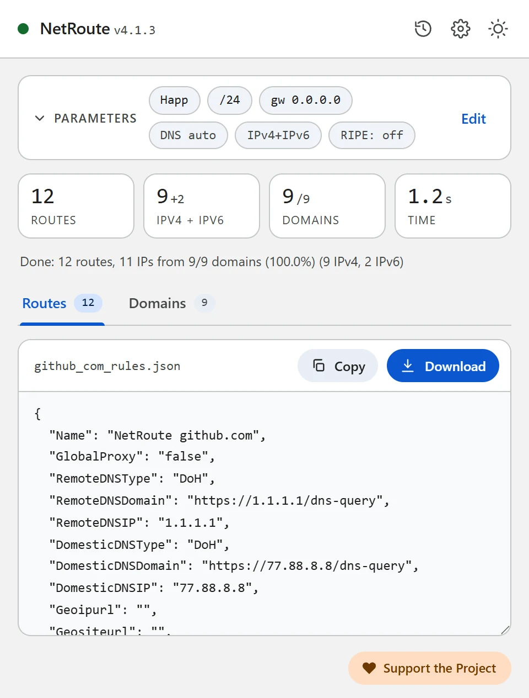
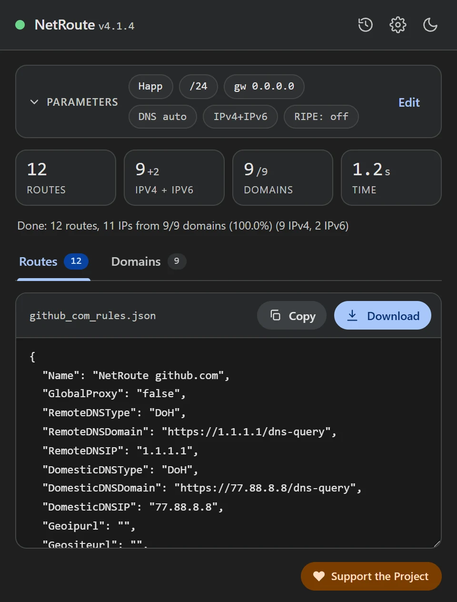

Perfil de enrutamiento de Happ desde cualquier sitio web
Actualizado · NetRoute versión 4.1.4
Happ es un cliente multiplataforma sobre el núcleo Xray para Windows, macOS, Linux, iOS, Android y plataformas de TV. Qué pasa por el proxy lo decide un perfil de enrutamiento: listas de dominios y direcciones. NetRoute construye ese perfil desde un sitio web como JSON, y entra en la app como un enlace happ://routing/onadd/….
Qué contiene el archivo
Un perfil de enrutamiento de Happ es un documento JSON con ajustes de DNS y de archivos geo y seis listas: qué pasa por el proxy, qué va directo y qué se bloquea — por separado para dominios y para direcciones. NetRoute rellena las listas del proxy y deja el resto en valores que Happ acepta por defecto:
{
"Name": "NetRoute github.com",
"GlobalProxy": "false",
"RemoteDNSType": "DoH",
"RemoteDNSDomain": "https://1.1.1.1/dns-query",
"RemoteDNSIP": "1.1.1.1",
"DomesticDNSType": "DoH",
"DomesticDNSDomain": "https://77.88.8.8/dns-query",
"DomesticDNSIP": "77.88.8.8",
"Geoipurl": "",
"Geositeurl": "",
"LastUpdated": "1760572800",
"DnsHosts": {},
"RouteOrder": "block-proxy-direct",
"DirectSites": [],
"DirectIp": ["geoip:private"],
"ProxySites": ["domain:github.com", "domain:githubusercontent.com"],
"ProxyIp": ["140.82.112.0/20", "185.199.108.0/22", "2606:50c0::/32"],
"BlockSites": [],
"BlockIp": [],
"DomainStrategy": "IPIfNonMatch",
"FakeDNS": "false"
}Qué significan los campos, según la documentación de Happ:
GlobalProxy— contruetodo el tráfico pasa por el proxy por defecto, confalseva directo; el mismo valor fija la salida de todo lo que no coincidió con ninguna regla. NetRoute ponefalse: solo los sitios listados pasan por el proxy.ProxySites/ProxyIp— dominios y direcciones que pasan por el proxy. Los dominios se escriben comodomain:name— según la documentación de Xray, es el dominio y todos sus subdominios; la lista está compactada,www.descartado. Las direcciones son las mismas redes agregadas que NetRoute emite como rutas de router, IPv4 e IPv6.DirectSites/DirectIpyBlockSites/BlockIp— directo y bloqueado; NetRoute deja en directo solo las direcciones privadas (geoip:private).RouteOrder— el orden en que se comprueban las reglas: primero bloqueo, luego proxy, luego directo.DomainStrategy— la estrategia de Xray:IPIfNonMatchresuelve un dominio a una dirección solo cuando ninguna regla coincidió por nombre.RemoteDNS*/DomesticDNS*— DNS para los sitios detrás del proxy y para el resto;DoHes DNS-over-HTTPS. Cambia los valores en el archivo antes de importar si quieres otros resolvers.Geoipurl/Geositeurl— enlaces a geoip.dat y geosite.dat; Happ rellena los valores vacíos desde su perfil por defecto.LastUpdated— una fecha Unix; el perfil se actualiza cuando es mayor que la anterior. NetRoute escribe la hora de generación.DnsHosts— correspondencias manuales «dominio: IP», como un archivo hosts; vacío en el perfil de NetRoute.


Qué necesitas
- La app Happ con un servidor añadido (Windows, macOS, Linux, iOS, Android, Android TV o Apple TV)
- La extensión NetRoute en Chrome
- Una forma de codificar un archivo en base64 — todos los sistemas tienen un comando para ello, ejemplos abajo
Paso 1. Genera el perfil en NetRoute
- Abre el sitio web en Chrome y recarga la página para que el sniffer de la extensión vea las solicitudes en segundo plano
- Inicia NetRoute
- En SO de destino elige Happ — el grupo «Clientes proxy»
- Los campos IP de puerta de enlace y Dispositivo no afectan a este formato
- Haz clic en Analizar sitio web
- En la pestaña Dominios desmarca lo que no necesites — contadores, redes publicitarias, CDN de terceros; el perfil se actualiza al instante
- Haz clic en Descargar: el archivo recibe el nombre del sitio, por ejemplo
github_com_rules.json
Paso 2. Construye el enlace happ://routing/…
Según la documentación de Happ, un perfil se añade con un enlace en el que {base64} es el perfil JSON convertido a texto base64:
happ://routing/add/{base64}— añade el perfil a la lista;happ://routing/onadd/{base64}— lo añade y lo activa al instante, incluso cuando otro perfil está activo.
Codifica el archivo descargado:
# Windows, PowerShell
[Convert]::ToBase64String([IO.File]::ReadAllBytes("github_com_rules.json"))
# macOS
base64 -i github_com_rules.json
# Linux
base64 -w0 github_com_rules.jsonAntepón happ://routing/onadd/ al resultado — una sola línea, sin espacios ni saltos de línea. El enlace queda largo; es normal.
Paso 3. Añade el enlace a Happ
Según la documentación de Happ, los enlaces se aceptan de tres maneras — copiados desde el portapapeles, escaneados desde un código QR y como deeplink:
- Copia el enlace construido al portapapeles
- Abre Happ y toca + en la esquina superior derecha de la pantalla principal
- Añade el enlace desde el portapapeles. A un teléfono lo más fácil es pasar el enlace como código QR o abrirlo como deeplink — el sistema ofrece abrirlo en Happ
- Con
onaddel perfil ya está activo; conaddselecciónalo en la lista de perfiles de enrutamiento - Reconecta: según la documentación, los cambios de perfil se aplican tras Reconnect (reconectar)
Paso 4. Comprueba
Abre el sitio para el que se construyó el perfil — debería abrirse a través del proxy, mientras que los demás sitios salen directamente (GlobalProxy: false). Si es al revés, comprueba qué perfil de enrutamiento está activo en Happ y que reconectaste tras la importación.
Problemas frecuentes
El enlace no se acepta
Comprueba que el base64 es una sola línea sin saltos (en Linux eso requiere el modificador -w0) y que va precedido exactamente de happ://routing/onadd/ o happ://routing/add/.
El perfil se añadió pero nada cambió
Happ aplica un perfil cambiado al reconectar. Con un enlace add el perfil además tiene que seleccionarse como activo.
El sitio obtiene datos de otros dominios
Deberían verse en la pestaña Dominios de NetRoute — la extensión recoge los dominios de la página y de sus solicitudes en segundo plano. Recorre el sitio antes de escanear (inicia sesión, abre un video) para que las solicitudes diferidas también acaben en el perfil. Varios sitios en un perfil — el botón Lista de URL junto al botón de análisis: el archivo se llama bulk_N_rules.json.
Un perfil en una suscripción
Según la documentación de Happ, una suscripción JSON puede llevar estrictamente 0 o 1 perfil de enrutamiento, y un enlace de perfil puede pasarse en la cabecera routing o directamente en el cuerpo de la suscripción — práctico cuando repartes ajustes a varios dispositivos.
DNS y fugas
El perfil fija dos servidores DNS: RemoteDNS para los sitios detrás del proxy y DomesticDNS para el resto — ambos por DNS-over-HTTPS (Cloudflare y Yandex en el archivo de NetRoute). Cámbialos en el JSON antes de codificar si necesitas otros resolvers. Las consultas del navegador siguen yendo adonde esté configurado su propio DNS: en Chrome desactiva «Usar DNS seguro» o apúntalo a un resolver en el que confíes; de lo contrario Chrome resuelve los nombres saltándose el cliente.
Comprobación: dnsleaktest.com con Happ activado debe mostrar el resolver del perfil, no el del ISP.
Archivo de configuración de ejemplo
Plantilla lista para editar. Reemplaza los dominios y redes de ejemplo con la salida de NetRoute para tus sitios.
happ-routing.json— un perfil de enrutamiento de Happ con las listasProxySitesyProxyIp
{
"Name": "NetRoute github.com",
"GlobalProxy": "false",
"RemoteDNSType": "DoH",
"RemoteDNSDomain": "https://1.1.1.1/dns-query",
"RemoteDNSIP": "1.1.1.1",
"DomesticDNSType": "DoH",
"DomesticDNSDomain": "https://77.88.8.8/dns-query",
"DomesticDNSIP": "77.88.8.8",
"Geoipurl": "",
"Geositeurl": "",
"LastUpdated": "1760572800",
"DnsHosts": {},
"RouteOrder": "block-proxy-direct",
"DirectSites": [],
"DirectIp": [
"geoip:private"
],
"ProxySites": [
"domain:avatars.githubusercontent.com",
"domain:github.com",
"domain:github.githubassets.com"
],
"ProxyIp": [
"140.82.112.0/20",
"185.199.108.0/22",
"2606:50c0::/32"
],
"BlockSites": [],
"BlockIp": [],
"DomainStrategy": "IPIfNonMatch",
"FakeDNS": "false"
}
Consejo: los formatos de texto se descargan con una cabecera de comentarios. Desactiva «Incluir comentarios en archivos exportados» en las opciones de NetRoute para obtener solo las reglas; los formatos JSON nunca llevan comentarios.
Todos los ejemplos de configuración en GitHub →
Documentación oficial
- Happ: Routing — los enlaces add y onadd, campos del perfil
- Happ: Adding Configuration/Subscription — portapapeles, código QR, deeplink
- Happ: Examples of links and parameters
- Xray: Routing — la forma domain: y las estrategias de dominio (zh)
Guías relacionadas
- Keenetic — rutas desde un archivo
.bat - MikroTik — importación de script
.rscen RouterOS - WireGuard — split tunneling mediante
AllowedIPs - Linux — script de shell con
ip route - OpenVPN — directivas
routeen la configuración del cliente - sing-box / Hiddify — rule-set para sing-box y Hiddify
- Xray / 3X-UI / v2rayN — routing.rules para Xray-core, 3X-UI y v2rayN
- AmneziaVPN — lista de sitios para split tunneling
¿Listo para probar?
NetRoute — extensión gratuita de Chrome para generar rutas desde cualquier sitio web.
Instalar extensión